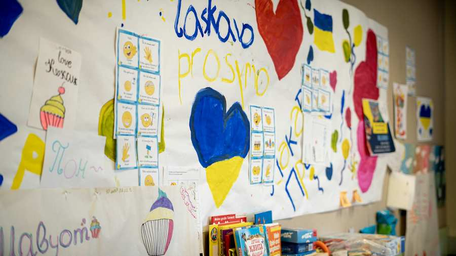
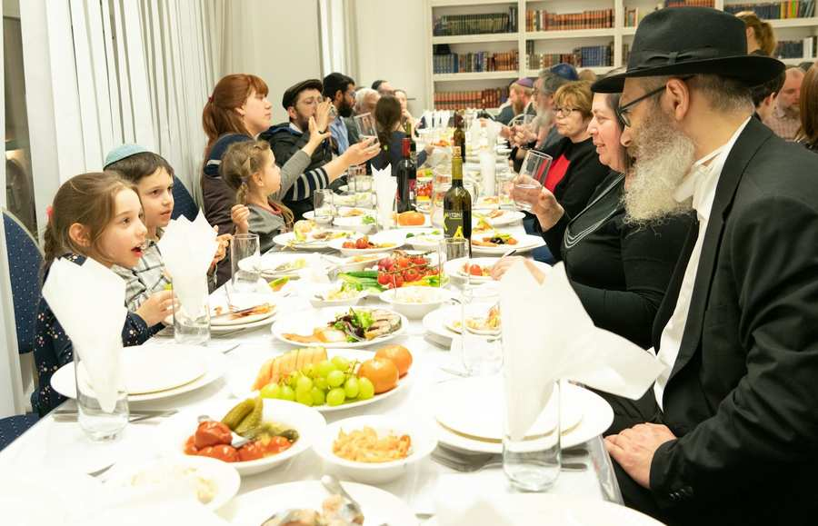
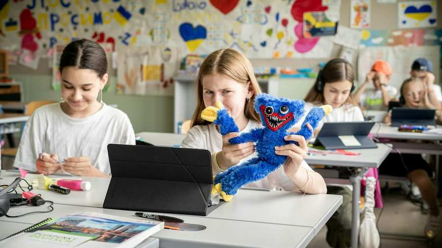

Ukraine Aid Vienna
The Jewish Community of Vienna (Israelitische Kultusgemeinde Wien, or IKG) ensures the well-being of all Jewish refugees from Ukraine in the Austrian capital. The services refugees receive include housing, social welfare, education in our Jewish schools, religious services, and kosher meals. We are so proud that a small community of 8000 Jews has absorbed more than 1000 Ukrainian Jewish refugees. As of now, more than 900 refugees have chosen to stay in Vienna. We support them in this difficult time and provide them with a safe environment, and, most of all, a sense of community.
Make a difference – please donate now
IKG Wien – Israelitische Kultusgemeinde Wien
Bank Name: BAWAG P.S.K
Bank Address: Wiedner Gürtel 11, 1100 Vienna
IBAN AT77 1400 0020 1072 4000
SWIFT BAWAATWW
Beneficiary Name: IKG Fundraising & Sponsoring
Beneficiary Address: Seitenstettengasse 4, 1010 Vienna
Donors from the United States can make a tax deductlable donation. In order to make a tax deductlable donation in the US, please make a donation to:
Society of American Friends of the Jewish Community Vienna
Bank Name: Citibank N.A.
Bank Address: 2101 L St. NW, Washington, DC 20037
ABA #: 254070116
SWIFT #: CITIUS33
Beneficiary Name: Society of American Friends of the Jewish Community Vienna
Beneficiary Address: 2101 L Street, NW Suite 800 Washington, DC 20037
Beneficiary Account #: 15456129
Projects

Psychosocial & Medical help
ESRA provides comprehensive professional help to people in need of mental and physical health care and social counseling. One focus of care and counseling are people who have been traumatized as a result of persecution, torture, migration, abuse, disasters or other serious events.
MoreFood and Shelter
To this date we have secured 190 housing units for 450 individuals while more than 900 individuals receive care from the Jewish Community.
More
Language Courses and Professional Integration
The Jewish Community, through its Jewish vocational training center JBBZ (Jüdisches Berufsbildungszentrum) offers German language courses for adults as well as job training.
More
How we help
From the first day of the attack on Ukraine, the IKG has devoted its resources towards helping fellow Jews in need. We have set up an ad hoc task force that has grown into a large support structure providing a wide range of services. All these services are made possible through generous donations as well as countless working hours of staffers. We also have an enormous team of community volunteers who are "hands on" and "on call" at any moment.
Our Roadmap: From Emergency Aid to Integration
Vienna's Jewish community acted swiftly in order to provide emergency aid. Now we are consolidating our efforts and preparing for the next step in supporting Jewish refugees in Vienna.
Emergency Aid | February 2022 – May 2022 | Fully funded and completed

When the war started, community members paid for hotel rooms that served as welcome centers for refugees. At one point, four hotels were fully staffed with volunteers to facilitate logistics and help the families arriving in Vienna on a daily basis. The service for the refugees included three kosher meals per day, administrative services such as registering as a refugee with the Austrian authorities, as well as medical aid. Vienna's Jewish Community mobilized its Jewish infrastructure ranging from schools, psychosocial care, member synagogues, kosher food suppliers, a clothing exchange as well as volunteers to provide care for the Jews who arrived in Vienna.
The IKG proudly and expertly mobilized ALL of its member Jewish groups, from Chabad to cultural institutions, to make sure that our brothers and sisters felt welcome and as comfortable as possible.
In this early stage of aid, the IKG organized buses to ensure a safe passage from the border of Ukraine to Vienna. For every refugee, the community provided a welcome package with money, kosher sweets for kids, FFP2 masks and SIM-cards to ensure that they can communicate. Additionally, the mobile support teams from our psychosocial care institution ESRA provided medical and psychological support for those who had to leave behind their loved ones due to the war. In most cases, women and children arrived, leaving the men behind. A true wartime story.
Consolidation | June 2022 - December 2022 | ongoing
With the war still raging, the IKG transitioned from emergency housing in hotels to permanent housing. Our goal is primarily the focus on and support of the transition of the individuals and families into a more independent living with a concrete integration perspective while ensuring our high level of service and support despite the challenge of the widespread distribution of the refugees over many districts and apartments. To this date the IKG has secured 190 housing units for 450 individuals while over 900 individuals receive care from the Jewish Community. Additionally, our community members provide 150 refugees with apartments free of charge, with some paying only for the utilities.
The IKG cooperates with various organizations in order to maximize the impact of each donation. This includes negotiating with major real estate owners in Vienna, government aid agencies and other refugee support organizations such as Caritas. In addition to providing housing, the community provides several services, from kosher meals, medical and psychosocial assistance, German classes, kindergarten/school or religious services, mostly at the newly established bigger location of the Russian Jewish Community.
Adults who have decided that they want to stay in Vienna for a longer period could enter the Austrian job market at our vocational training center.
Integration | Beginning 2023 | in preparation

With no end of the war in sight, our small but strong community is preparing to secure the accommodation of nearly 1000 Jewish refugees from the Ukraine. This includes raising the necessary funds to maintain the leases on the 190 apartments plus renting additional apartments for families who have to transition from private arrangements to community organized solutions. More information will become available with time, but for now please know that we are here for the long-term, as many of the refugees have recognized what a warm and friendly community the IKG has created.
On behalf of so many here in Jewish Vienna, the IKG thanks you!
PLEASE NOTE
BUDGETS AND FINANCIAL NEEDS ARE CONSTANTLY EVOLVING. FEEL FREE TO CONTACT ROBERT KATZ +1 917 721 4664 TO RECEIVE UPDATED FINANCIALS.